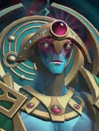
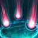

Rain of Destiny
Active Ability: Activate on full mana
Bring forth rain to the target area and heal allies in.
| ★ | ★★ | ★★★ | |
|---|---|---|---|
| RADIUS | 300 | 350 | 450 |
| DARUTION | 5 | 7 | 10 |
| HPS | 100 | 100 | 100 |
| HEAL TICK RATE | 1.0 | ||
| EXTRA CHANCE% | 10 | 20 | 30 |
| Cooldown (s) | 12 | 10 | 8 |
| Mana cost | 100 | ||
- Lucky Aura: Have additional chances on all probability synergies.
Through a mixture of the astral and atmospheric Nerif bends a single reality into a paradoxical alignment.
Stats
| ★ | ★★ | ★★★ | |
|---|---|---|---|
| Health | 550 | 1100 | 2200 |
| Mana | 100 | 100 | 100 |
| Armor | 1 | 1 | 1 |
| Magic resistance | 10% | 10% | 10% |
| Attack damage | 40–60 | 80–120 | 160–240 |
| Attack interval (s) | 1.6 | 1.6 | 1.6 |
| Attack range | 400 | 400 | 400 |
| Move speed | 500 | 500 | 500 |
 God · Overweening Superiority
God · Overweening Superiority
- (2) All allies: skill cooldowns -40%.
- (4) All allies get another -40% skill cooldown. It multiplies with the (2) bonus, for -64% in total.
- (6) All allies: right after casting their skill, the remaining cooldown of that skill and of all their items is cut by 60%.
 Priest · Salvation
Priest · Salvation
Priests can't be mind controlled.
- (2) When you lose a round, take damage and survive while you have an empty board slot, you get a Tango (restores 1-8 courier HP).
- (4) At battle start, one Priest per empty board slot (highest level first) mind controls the highest-level enemy at or below its own level. The control lasts (Priest level x 2 + 1) seconds and ends early if the Priest dies.